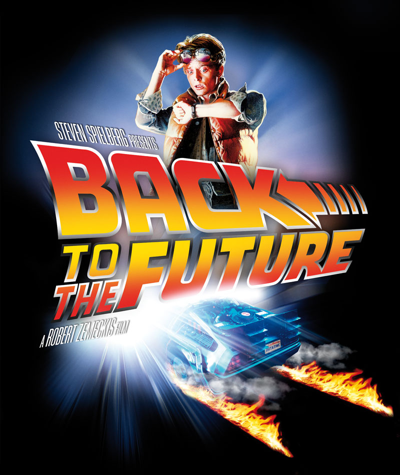
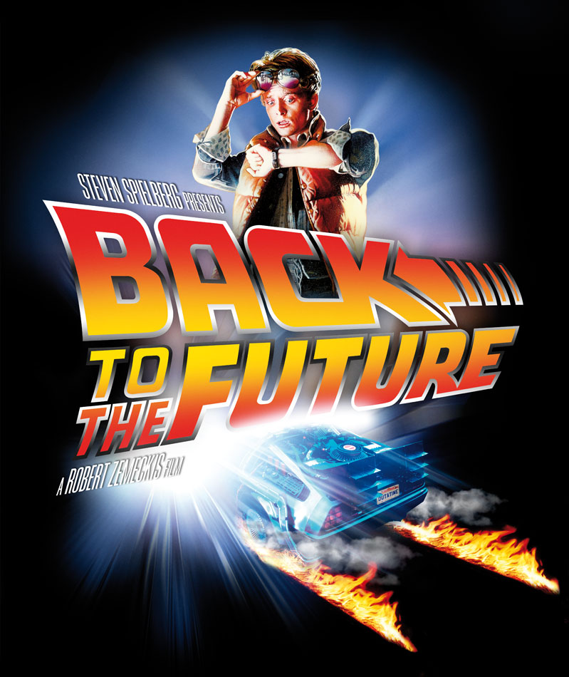

Back To The Future
Back To The Future is one of my favourite movies of all time. I remember watching all the movies when I was a kid and enjoying them all the way through!
Back To The Future is one of my favourite movies of all time. I remember watching all the movies when I was a kid and enjoying them all the way through!
Kids and parents alike are gonna dig this wonderful fantasy.
★ ★ ★ ★ ☆
The 1985 original, in which Marty and Doc zoom 30 years back to 1955, remains the best.
★ ★ ★ ☆ ☆
A great mix of fantasy, humor and drama, with a light tone but not in a ridiculous way and with well built characters you can identify with.
★ ★ ★ ★ ★
Micheal J. Fox as Marty McFly

Christopher Lloyd as Dr. Emmett Brown
Lea Thompson as Lorraine Baines McFly
Thomas F. Wilson as Biff Tannen
Crispin Glover as George McFly